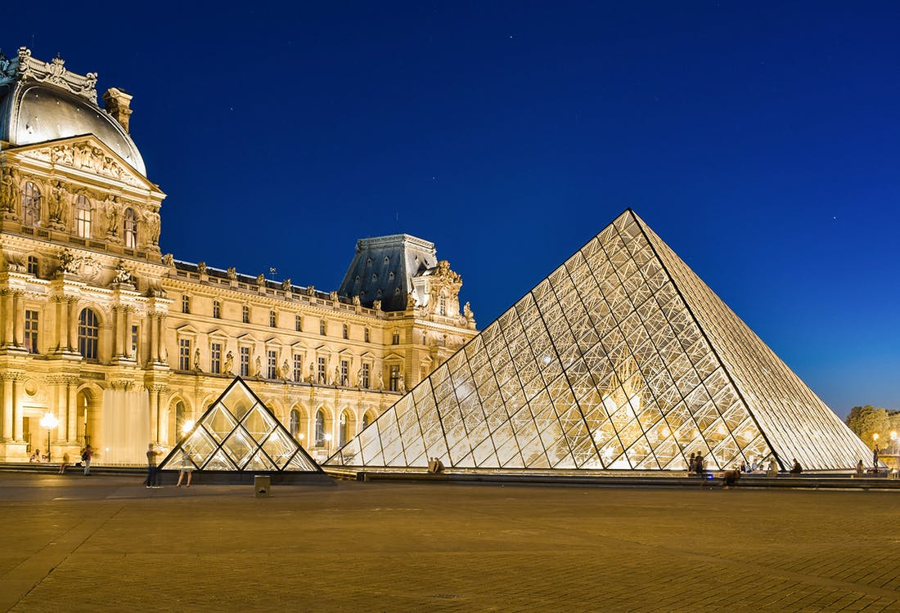
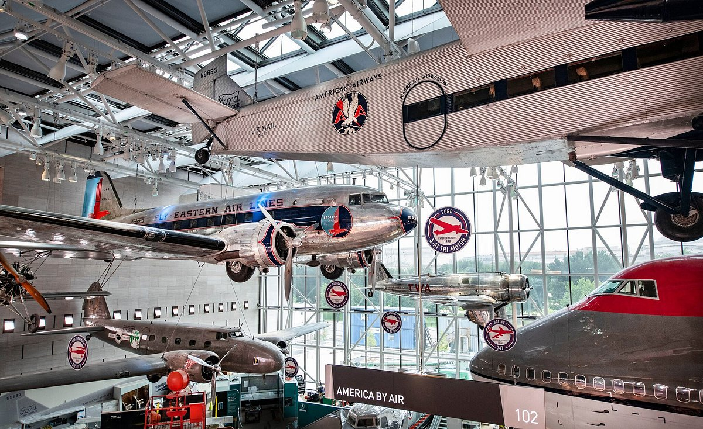
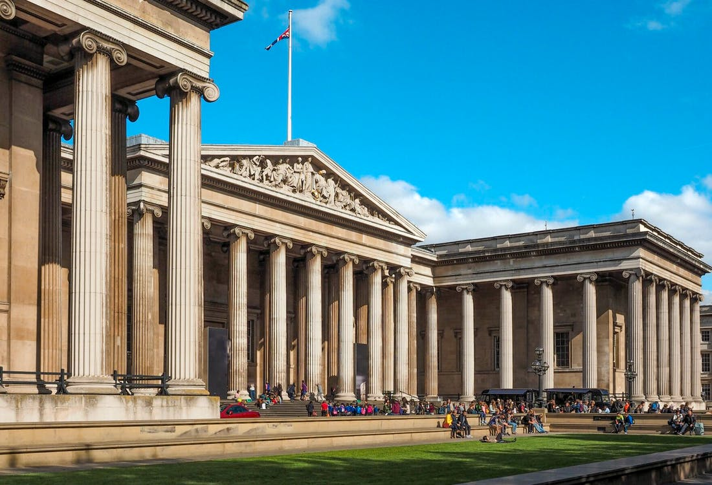
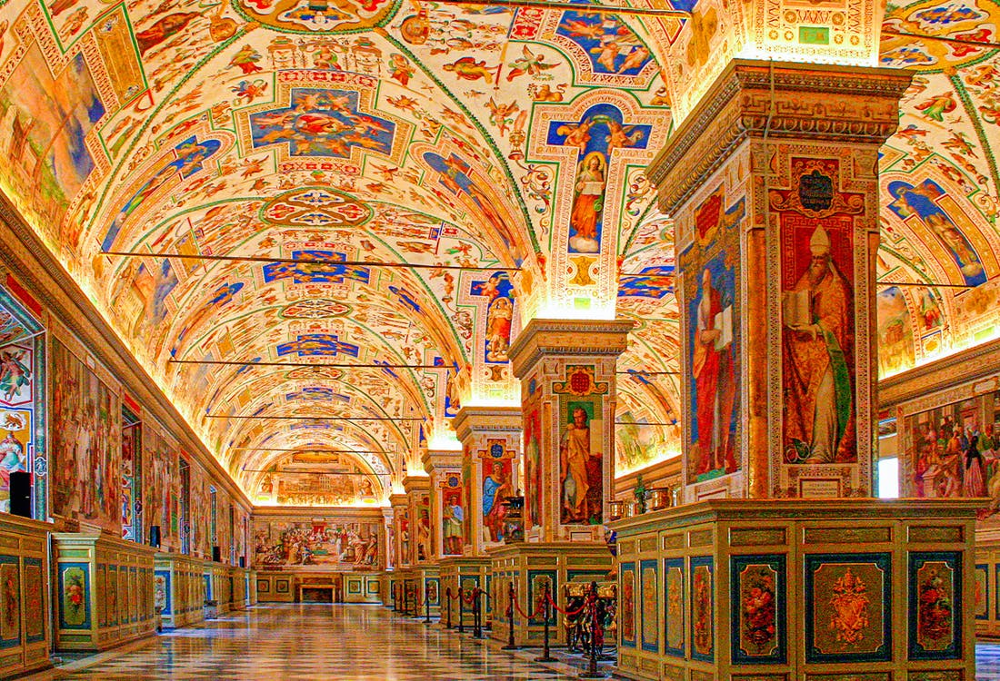
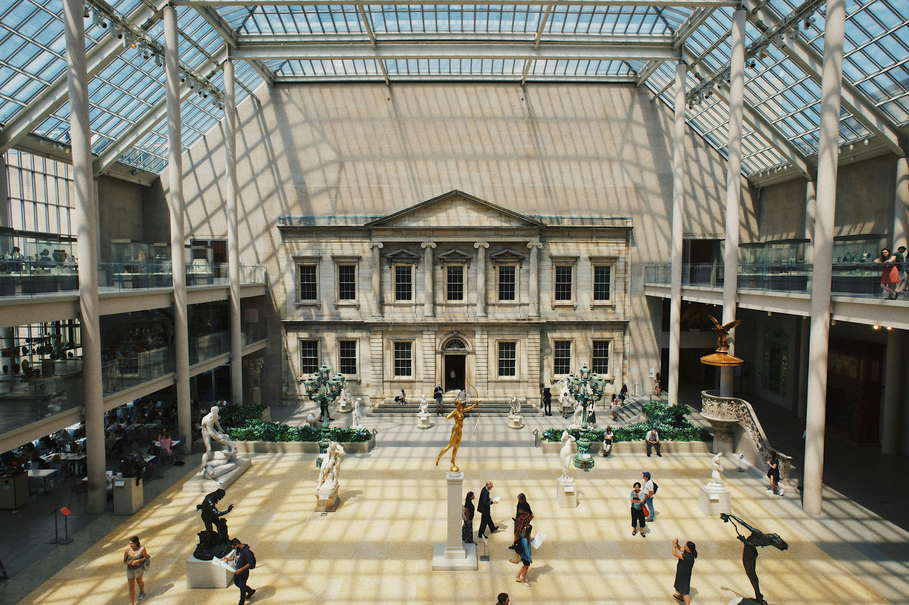
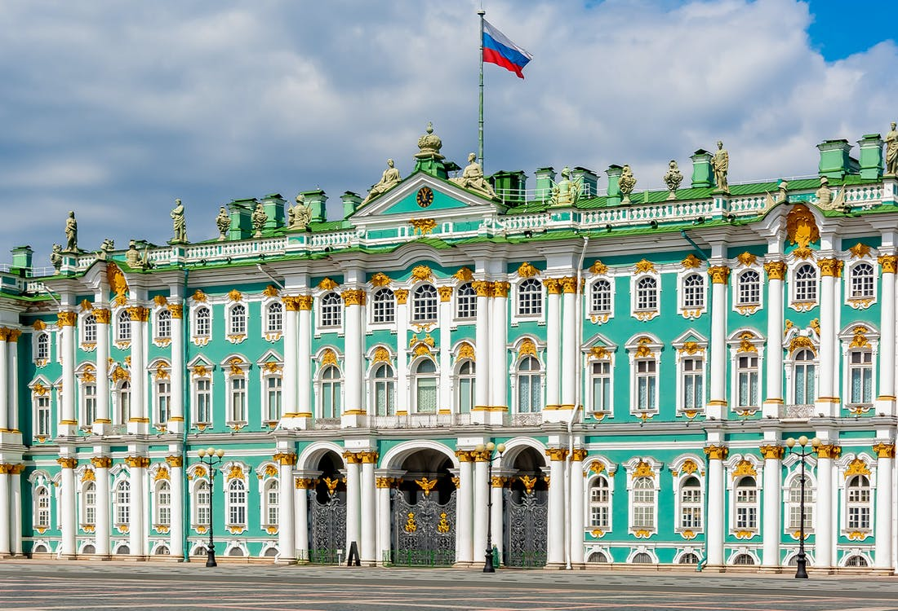
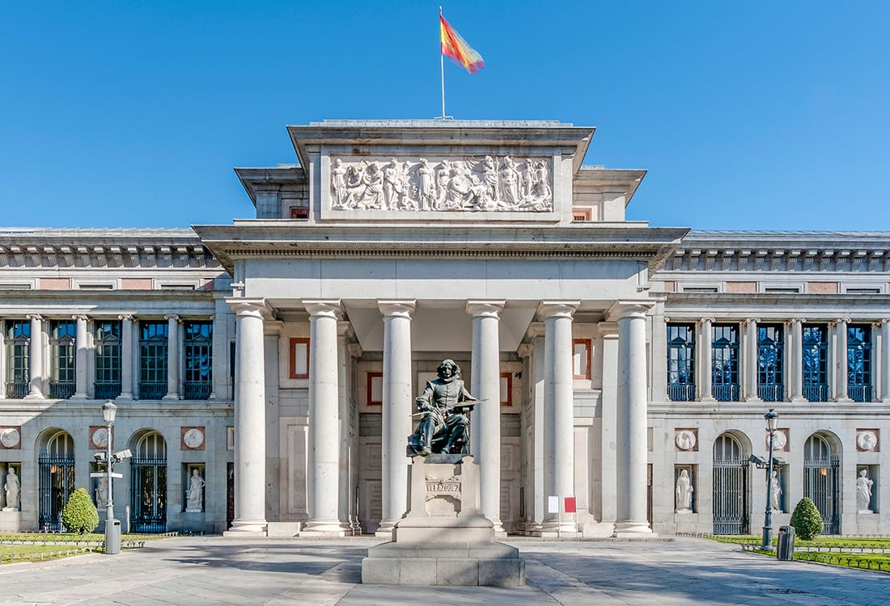
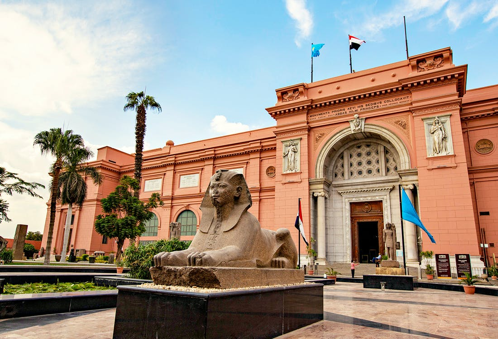
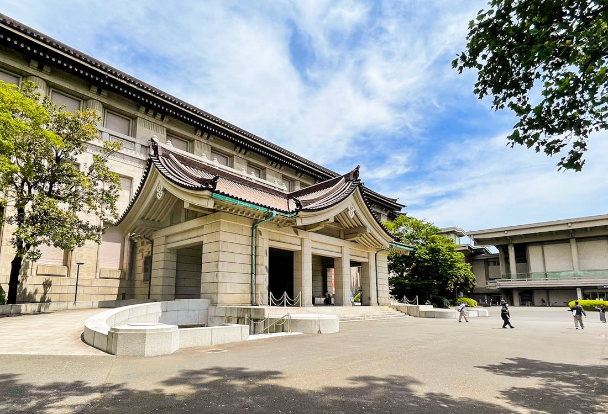

The Louvre, France
The Louvre Museum, located in Paris, France, is a world-renowned art museum housing over 380,000 objects, including iconic works like the Mona Lisa and the Venus de Milo. Once a royal palace, its impressive architecture and extensive collection make it a top tourist destination.

Smithsonian National Air and Space Museum, USA
The Smithsonian National Air and Space Museum showcases the history of aviation and space exploration through its impressive collection of aircraft, spacecraft, and artifacts, including the original Wright Brothers' plane and the Apollo 11 command module. Visitors can also enjoy unique experiences in the planetarium and IMAX theater.

British Museum, England
The British Museum, one of the world's largest museums, boasts over eight million objects that encompass human history and culture across all continents, including iconic artifacts like the Rosetta Stone and ancient Egyptian mummies. Admission is free, and visitors can also access its extensive research library.

Vatican Museums, Vatican City
The Vatican Museums in Vatican City showcase a vast collection of art and artifacts amassed by the Popes over centuries, featuring masterpieces like Michelangelo's Sistine Chapel ceiling and Raphael's Rooms. The collection also includes classical sculptures, tapestries, and works from ancient Egypt, Greece, and the early Christian era.

The Metropolitan Museum of Art, USA
The Metropolitan Museum of Art in New York City is one of the largest and most prestigious art museums globally, featuring over two million artworks spanning 5,000 years of history. It is especially celebrated for its collection of European paintings, including masterpieces by Rembrandt, Vermeer, and Van Gogh.

State Hermitage Museum, Russia
The State Hermitage Museum in St. Petersburg, Russia, is one of the world's largest art museums, housing over three million works spanning ancient to modern times. Located in a former imperial palace, it features over 1,000 rooms, including the Winter Palace and various Hermitage sections.

Prado Museum, Spain
The Prado Museum in Madrid, Spain, is a world-renowned art museum boasting over 20,000 works, primarily showcasing European art from the 12th to the 20th century. Its collection features masterpieces by legendary artists like Diego Velázquez, Francisco de Goya, and El Greco, alongside works by Flemish, Dutch, Italian, French, and German masters.
National Museum of China, China
The National Museum of China in Beijing is one of the largest museums in the country, showcasing over one million artifacts that span from prehistoric times to the present day. Its diverse exhibitions feature rare cultural relics, ancient porcelain, calligraphy, jade, and traditional Chinese medicine, reflecting the rich history and culture of China.

Egyptian Museum, Egypt
The Egyptian Museum in Cairo is a premier institution showcasing over 120,000 artifacts from ancient Egypt, including rare pharaonic antiques and treasures from King Tutankhamun's tomb. Visitors can explore numerous galleries highlighting the rich art, culture, and architecture of this remarkable civilization.

Tokyo National Museum, Japan
The Tokyo National Museum, located in the heart of Tokyo, is one of Japan's largest museums, showcasing over 110,000 objects that highlight Japanese art and cultural artifacts from ancient to modern times. Its impressive exhibits include significant collections of Buddhist art, ceramics, textiles, and samurai armor and swords, with a focus on the Heian and Kamakura periods.